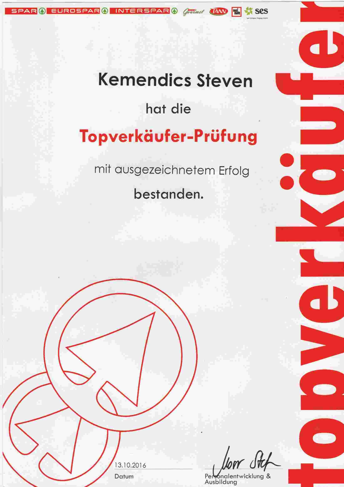

Steven KEMENDICS
Software Developer
Software Developer
E-mail: stevenkemendics@gmail.com
Phone: +43 660 8739016
My time at Interspar was marked by the greatest challenges of my life. I was 24 years old and wanted to provide my wife and our planned children with the very best financially. Therefore, my plan was to climb the career ladder as quickly and as effectively as possible.
I started in the beverage department but soon switched to the fruit and vegetable department, as my prospects for advancement were most promising there. We were a very young team and knew that we wouldn’t be working together forever, since the entire store was scheduled for renovation. We were promised that the corporation would try to reassign as many employees as possible to other branches, and simultaneously, a new branch was being built.
I got along well with the team and managed to avoid getting involved in disputes among my colleagues. After more than six months, the final days of our branch approached. My department head and I were the only two the corporation wanted to retain, and I received a new position in the newly opened branch.
Hopes were high as we started in the fruit and vegetable department with five colleagues, and I was appointed deputy department head. My responsibilities included sorting and restocking the department, organizing and cleaning our storage area, placing orders, providing customer advice and service, as well as leading and coordinating the team.
Before I started working there, I had already been warned that the head of our department was a difficult personality. Nevertheless, I took the step because it offered the best career opportunities. However, success did not come immediately, and our team was quickly reduced to the legal minimum of three people. I was tasked with placing orders and taking charge whenever the department head was absent.
Despite these setbacks, the entire team worked well together and supported one another. Internally, however, things were different in our fruit department. No one was considered good enough by the head, and the constant high pressure meant that the third person in our department never stayed long. On several occasions, the head and I had to manage the department as a duo for a few weeks.
Determined to provide a good life for my family despite my limited education, I forced myself to persevere. I also received encouraging words and motivational support from colleagues who understood the difficulties between the head and me. Monday mornings were always the most exhausting part of the week—promotional changes in the fruit and vegetable department meant that the goods cleared over the weekend had to be almost completely restocked. I don’t know why, but despite her decades of experience, my department head placed no value on planning ahead for Mondays. Eventually, I took the initiative to start preparations on Fridays and Saturdays, so that we could finish earlier and more efficiently on Mondays.
I did experience some successes during this time. The branch manager, who was determined, extremely strict yet fair, wanted to support me and sent me for internal corporate training. At a talent day, I made a positive impression, and about 19 others out of roughly 50 people were selected to receive training as top salespeople—a prerequisite at Interspar for eventually becoming a department head.
As months passed, work improved, yet cooperation remained incredibly difficult. The branch where I had started was about to reopen, and I saw it as my chance to work under better conditions. I secured a position in the newly opened branch and, despite facing more experienced colleagues, was reinstated as deputy.
My internal training continued as I participated in several sessions that covered not only the rules and policies of the corporation but also teamwork and leadership. In the end, I completed my top salesperson course with distinction and held high hopes for my future at Interspar. In the new branch—with a new team and a new department head—the work environment and atmosphere improved.
However, gradually the same problem crept in again: the daily, repeated disrespect I had to endure from customers. Even the new corporate policy, “the customer is always right,” did not sit well with me; even in cases of outright rudeness, I was required to agree, apologize, and almost thank them for their behavior.
Over time, the work became increasingly difficult to manage. Colleagues who left were not replaced, and demands grew. My new department head took it upon herself to train me better and prepare me for one day managing a department, which led to even more overtime and mounting disrespect.
Wanting to protect my small family from constantly changing work schedules and the uncertainty of when I would actually be home—and from my ongoing exhaustion—I decided to look for a new job. I began searching for something new and was firmly convinced that the grocery retail sector was not for me.
A very defining day came at the end of spring when, while still working at Interspar, I was also seeking a new challenge. My department head approached me, explaining that she had noticed her desire to promote me further, and she offered to support me in her free time to help me learn better and faster. That was the moment of truth.
I knew I wanted to leave and saw no future in the corporation, yet I also realized that speaking up would soon result in being given notice, leaving me with little time to find another job. With a two-year-old daughter and a pregnant wife at home, we were very dependent on my income. I had to decide whether to continue with my work—deceiving my department head—or to be honest and risk further straining our already difficult financial situation.
I chose honesty and told her that I had realized the job was not for me and that I was looking for something new. Although my department head was understanding, she informed me that July 31 would be my last working day at the branch.
I spent my final months working diligently so as not to leave my colleagues in the lurch, while also searching for a new job. My efforts paid off; about a month before my last working day, I had two new job prospects. I chose the one that was most family-friendly, and years later, I was greatly rewarded for that decision.